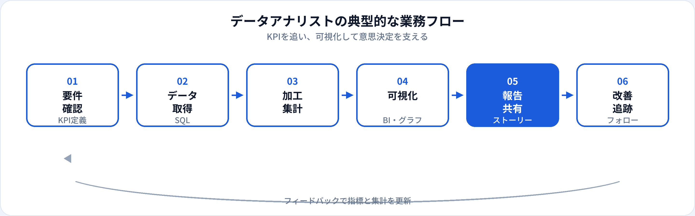

データアナリスト（Data Analyst）は、SQLやBIツールを使って業務データを集計・可視化し、KPIの推移を関係者に伝える専門職です。データサイエンティストと名称が近いですが、実務では「定型レポート」「ダッシュボード」「部門別の数値追跡」の比重が高いポジションとして理解されることが多いです。本記事では、年収、スキル、関連職種との違いを2026年6月時点の市場感覚で整理します。
資格・学習との関係
データアナリストに必須なのは資格よりSQLと可視化の実務力です。一方で、G検定ではビッグデータやデータ活用の背景知識が問われ、生成AIパスポートでは業務でのAI活用・情報セキュリティの考え方が整理できます。面接では「指標の定義」「集計ロジック」「グラフの読み取り方」を説明できるかが見られます。
よくある誤解は、「データアナリスト＝Excelが使えれば十分」という考え方です。小規模な現場ではそれでも回りますが、採用求人ではSQL、ダッシュボードツール、再現可能なクエリ管理が前提となることがほとんどです。
データアナリストとは
データアナリストは、Data Analystとして、営業・マーケティング・プロダクト・経理などの部門が必要とする数値の見える化を担います。単発の集計だけでなく、週次・月次のレポートやダッシュボードを維持し、異常値やトレンドを早期に共有する役割もあります。
生成AIツールの普及以降、SQLの下書きやグラフ説明文のたたき台をAIに任せ、人間が定義と解釈を確認する働き方も増えています。ただし、KPIの定義ズレや集計ミスはビジネス判断に直結するため、最終的な責任はアナリスト側にあります。
仕事内容
組織によって分担は異なりますが、データアナリストに期待されやすい業務は次のとおりです。

要件・KPIの確認
「何を・いつ・誰向けに」測るかをすり合わせ。指標定義書やデータ辞書の更新も。
データ取得（SQL）
倉庫やトランザクションDBから抽出。JOIN・ウィンドウ関数・期間比較が日常業務に。
加工・集計
部門別・チャネル別・コホート別の切り口。重複排除と母数の整合を確認する。
可視化・ダッシュボード
Looker、Tableau、Power BI、スプレッドシート。見る人が迷わない設計が重要。
報告・ストーリーテリング
数値の背景と次のアクションをセットで伝える。定例MTGでの説明が中心のことも。
改善の追跡
施策前後のKPI変化をフォロー。定義変更時は過去数値との比較可能性に注意。
必要スキル
| 領域 | 具体例 | 重要度の目安 |
|---|---|---|
| SQL | SELECT/JOIN、集計、サブクエリ、BigQuery/Snowflake/Redshift | 必須 |
| BI・可視化 | Looker、Tableau、Power BI、Googleスプレッドシート | 必須 |
| 基礎統計 | 平均・中央値、前年比、構成比、単純な相関の読み方 | 必須 |
| ドメイン知識 | EC、SaaS、広告、小売など業界のKPI理解 | 実務で差がつく |
| Python（任意） | pandas、自動レポート、Notebook | 中級以上で重視 |
年収相場
当サイトの職種マスタでは、データアナリストの年収目安を400万〜800万円としています（2026年6月時点の一般的な相場感）。データサイエンティストより入りやすい帯域ですが、高度なSQL・ドメイン特化・英語要件がある求人では上限が上がります。
| 区分 | 年収の目安（日本・一般論） | 補足 |
|---|---|---|
| ジュニア | 400万〜500万円前後 | 定型レポートの作成・ダッシュボード更新から |
| ミドル | 500万〜650万円前後 | 部門横断の指標設計・自律的な分析 |
| シニア | 650万〜800万円以上 | 分析方針のリード・後輩育成・データ基盤との連携 |
キャリアパス
-
ビジネスアナリスト / 部門アナリスト
特定部門のKPIオーナー。営業・マーケ・CSなどに深く入り込む。
-
データサイエンティスト寄り
Python・統計・実験設計のスキルを足し、モデル構築や仮説検証へ。
-
データエンジニア寄り
パイプライン・dbt・データ品質の改善。SQLの先に基盤側へ。
-
アナリティクスリード・マネジメント
複数ダッシュボードとチームを統括。採用・育成も担当。
関連職種との違い
| 職種 | 主な焦点 | データアナリストとの違い |
|---|---|---|
| データサイエンティスト | 仮説検証・モデル・意思決定 | 統計・MLの比重が高い。アナリストはレポーティング寄りのJDが多い。 |
| AIエンジニア | AI機能の実装 | プログラミングとモデル本番化が中心。アナリストはBI・SQLが中心。 |
| ビジネスアナリスト（BA） | 要件定義・業務設計 | システム開発の橋渡しが多い。データアナリストは数値分析が中心。 |
| データエンジニア | データ基盤・ETL | パイプライン構築が中心。アナリストはその上の集計・可視化。 |
未経験からの道のり
-
SQLの基礎（1〜2か月）
SELECT、JOIN、GROUP BYを習得。公開データやKaggleのSQL課題で練習。
-
BI・可視化（1〜2か月）
スプレッドシートまたは無料枠のBIでダッシュボードを1つ完成させる。
-
ポートフォリオ（1か月）
「問い→SQL→グラフ→示唆」をREADME付きでGitHubに公開。
-
社内実務 or 副業（継続）
現職の数字報告を自動化する、小規模案件で実績を積む。
メリット・デメリット
| メリット | デメリット |
|---|---|
| 未経験から入りやすいデータ職の入口になりやすい | 定型業務が多く、マンネリ化しやすい |
| ビジネスに近い位置で成果が見えやすい | 急な集計依頼で優先度が乱れやすい |
| データサイエンティスト・エンジニアへステップアップしやすい | KPI定義の争いに巻き込まれやすい |
| 生成AIで生産性を上げる余地が大きい | データ品質問題の根本原因まで届かないことも |
よくある質問
データアナリストとデータサイエンティストの違いは？
データアナリストはSQL・BI・可視化によるKPI追跡に比重が置かれることが多く、データサイエンティストは仮説検証・統計・機械学習に比重が置かれることが多いです。詳しくはデータサイエンティストの解説も参照してください。
データアナリストに必要なスキルは？
SQL、BIツール、基礎統計、ビジネス文脈の理解が求められます。Pythonは必須ではありませんが、あるとキャリアの選択肢が広がります。
データアナリストの年収相場は？
経験・業界により幅がありますが、おおむね400万〜800万円前後が目安となることが多いです（2026年6月時点の一般的な相場感）。
未経験からデータアナリストになれますか？
可能です。SQLとBIのスキルを独学で積み、ポートフォリオで集計・可視化の実例を示すのが典型的なルートです。
文系出身でも大丈夫ですか？
文系出身で活躍している例は多いです。論理的な集計思考と、数字を言葉で説明する力が重要です。数学の高度な知識より、SQLと業務理解のほうが日常では効く場面が多いです。